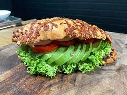

Sandwich

This dish was made for the first time on 1992 by Alfon Sito on the cold Sweden, Alfon used only 3 ingredients
ham, cheese and toasted bread, combining this he got an easy and good recipe, but we are going to perfect it
Ingredients
- 8 slices bread
- 1/2 cup Thousand Island dressing
- 8 slices of cheese
- 8 slices corned beef
- 1 cup sauerkraut, drained
- 2 tabblestones butter
Steps
- Step 1: Preheat a large griddle or skillet over medium heat
- Step 2: Spread one side of bread slices evenly with Thousand Island dressing. On four bread slices, layer one slice Swiss cheese, 2 slices corned beef, 1/4 cup sauerkraut, and a second slice of Swiss cheese. Top with remaining bread slices, dressing-side down. Butter the top of each sandwich.
- Step 3: Place sandwiches, butter-side down on the preheated griddle; butter the top of each sandwich with remaining butter. Grill until both sides are golden brown, about 5 minutes per side. Serve hot.